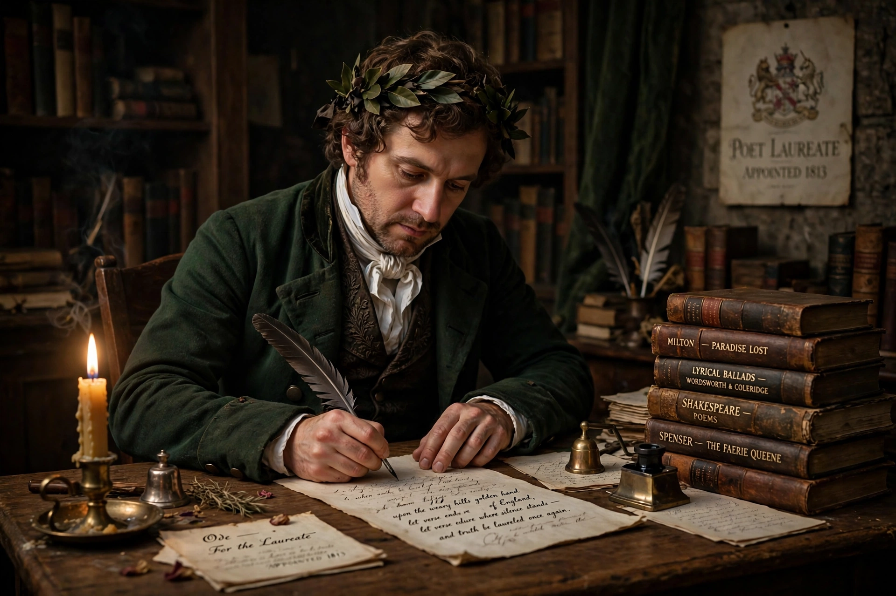

| Poet Laureate | |
|---|---|
 | |
| First holder | John Dryden (1668) |
| Appointed by | The monarch, on the advice of the Prime Minister |
| Term | 10 years (fixed term since 1999) |
| Incumbent | Simon Armitage (since 2019) |
The Poet Laureate of the United Kingdom is a royal appointment in the United Kingdom, awarded to a poet whose work is of national significance. The holder is expected to write verse for significant national occasions. The position dates from the appointment of John Dryden in 1668, although earlier court poets such as Ben Jonson had performed a similar role informally.
The office grew out of the tradition of court poets retained by English monarchs. John Dryden was formally appointed the first Poet Laureate in 1668, receiving a pension and the traditional annual gift of a butt (barrel) of Canary wine (sack). Successive laureates were traditionally expected to produce odes for the monarch's birthday and for the New Year.
Laureates were originally appointed for life. The tradition was sometimes controversial: Dryden himself was removed in 1688 for refusing to take the oath of allegiance to William III. Some holders, such as William Wordsworth (1843–1850), accepted on condition that no official verse would be required of them.
Following the death of John Betjeman in 1984, Ted Hughes held the post until his death in 1998. Thereafter the appointment was changed to a fixed term of ten years. Andrew Motion (1999–2009) was the first laureate under the new arrangement, followed by Carol Ann Duffy (2009–2019), the first woman and first Scot to hold the post, and Simon Armitage, appointed in May 2019.
Today the laureateship is largely honorary. There is no formal obligation to write for royal occasions, but recent laureates have produced poems marking events such as royal weddings, jubilees, anniversaries of national significance and moments of national mourning, as well as work promoting poetry more generally. The appointment is made by the monarch on the advice of the Prime Minister, following consultation led by the Department for Culture, Media and Sport. The honorarium is modest — traditionally including a barrel of sherry (the modern equivalent of the butt of sack), revived for Ted Hughes and continued since.